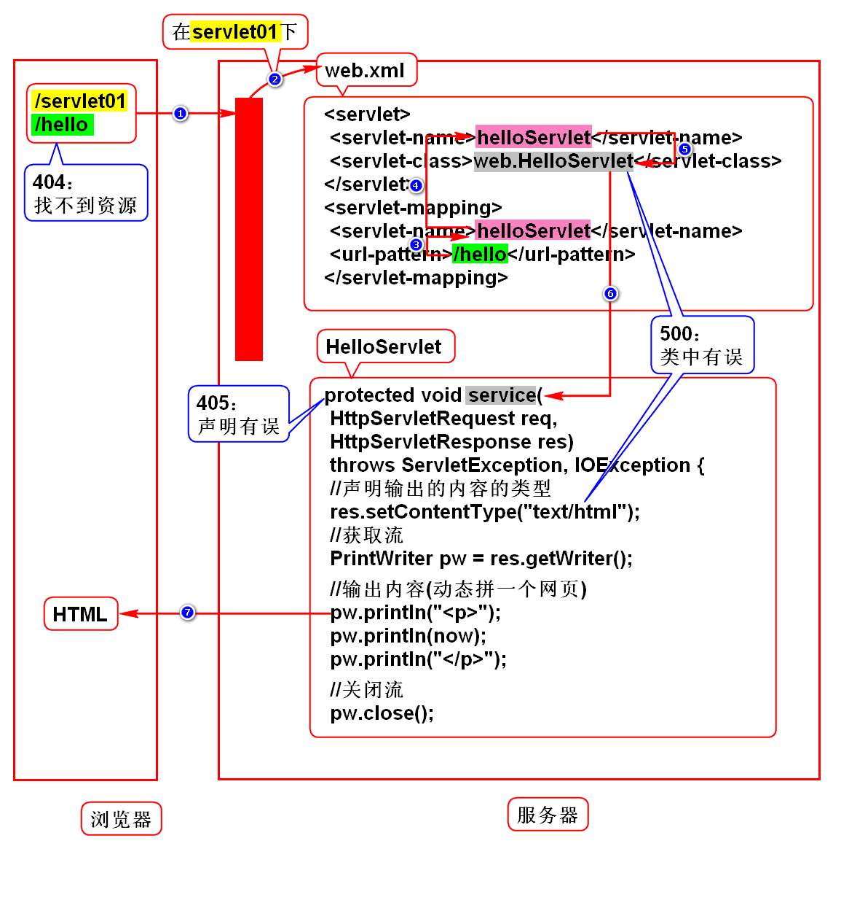
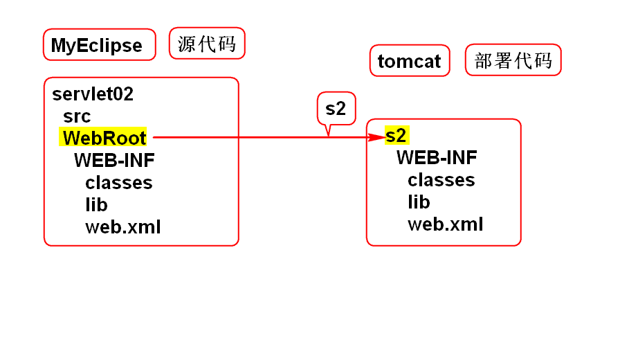

Web项目的发展
- 单机 -> 网络
- CS(Client Server) -> BS(Browser Server)
Servlet
如何访问网页
静态
动态
- 微博、淘宝
- 访问服务器端的某组件，由它动态拼一个
HTML返回给浏览器 - 在Java项目中该组件就是Servlet
组件：满足规范的对象
Servlet特征
- Servlet可以动态拼HTML/图片等动态资源
- Servlet是服务端的组件，必须在服务器
上才能运行。 - Servlet是Sun推出的，是有规范的组件。
什么是Servlet
Servlet是Sun推出的，用于在服务器端
处理HTTP协议(拼动态资源)的组件。
服务器
名称
- Java服务器
- Java Web服务器
- Web服务器
- Servlet容器
本质
举例
- Tomcat
- JBoss
- WebLogic
- WebSphere
Tomcat
Linux
- 配置JAVA_HOME
- 现场：/home/soft01/tts9/apache-tomcat-7
远程：
/文件系统/opt/apache-tomcat ->
/文件系统/home/soft01下 - 在/tomcat/bin/下，终端命令./startup.sh
(chmod +x *sh) - 浏览器输入http://localhost:8080，回车后
看到一只猫就代表成功了。 - 在/tomcat/bin/下，终端命令./shutdown.sh
Windows
- 配置JAVA_HOME
- 解压tomcat.zip
- 在/tomcat/bin下，双击startup.bat
- 浏览器输入http://localhost:8080，回车后
看到一只猫就代表成功了。 - 在/tomcat/bin下，双击shundown.bat
用MyEclipse管理Tomcat
配置tomcat
- 点击服务器图标->Configure Server
- 选择Servers->Tomcat->Tomcat7.x
- 点击Enable
- 点击Browse，在弹出框中选择tomcat根目录
- Apply
- 选择Tomcat7.x/JDK
- 选择JDK
如果在Tomcat6.x下配置tomcat7，
选择Tomcat6.x/Paths，在右侧第一个框，
Add Jar，选择tomcat7/bin/juli.jar。
使用tomcat
服务器图标
Tomcat7.x -> Start/Stop Server
Servers
- window->show view->others->Servers
- Run Server(绿三角)启动Tomcat
- Stop Server(红方块)关闭Tomcat
Servlet规范
Web项目的规范
- 目录结构
WebRoot WEB-INF
classes
lib
web.xml
- 说明
- WebRoot可以任意命名
- classes用来存放class文件
- lib下放jar包
- web.xml用来配置Servlet
- 开发
MyEclipse创建web项目，自带此结构
Servlet的规范
- 实现Servlet接口
- 继承于HttpServlet
HttpServlet implements Servlet
部署(拷贝)
- Servers -> Add Deployments(黑色按钮)
- 选择项目 -> Finish
常见错误
404
- 资源找不到
- 检查浏览器路径
500
- 类写错
- 检查web.xml中的类名
- 检查service方法内的代码
端口被占用
启动tomcat时，控制台报错：
Address already in use
JVM_BIND:8080
原因1
- 在未关闭tomcat时就重新启动了tomcat
- 需要手动shutdown
原因2
- 安装了某软件，它占用了8080端口
- 修改Tomcat端口
- 打开/tomcat/conf/server.xml，
搜8080(70行)，进行修改(8088/8089)。 - 修改后要重启Tomcat
Servlet执行过程

重新部署
删除部署项目
Servers->Tomcat7.x->项目->右键->remove
重新部署项目
Servers->Tomcat7.x->项目->右键->redeploy
源代码和部署代码的关系

HTTP
什么是HTTP协议
该协议规定了浏览器和服务器如何通信，
以及通信的数据格式。
如何通信
- 建立连接
- 发送请求
- 发送响应
- 关闭连接
上述4步已经由浏览器实现。
数据格式
请求数据包
- 请求行：协议的基本信息
- 消息头：描述信息
- 实体内容：传输的数据
响应数据包
- 状态行：协议的基本信息
- 消息头：描述信息
- 实体内容：传输的数据
如何在服务端处理数据
- Java项目采用Servlet处理数据
- request用来处理请求数据
- response用来处理响应数据
浏览器已经实现了通信，也实现数据传输。
程序员需要知道在服务端如何接收到这份
传输过来的数据，以及如何给客户返回HTML。